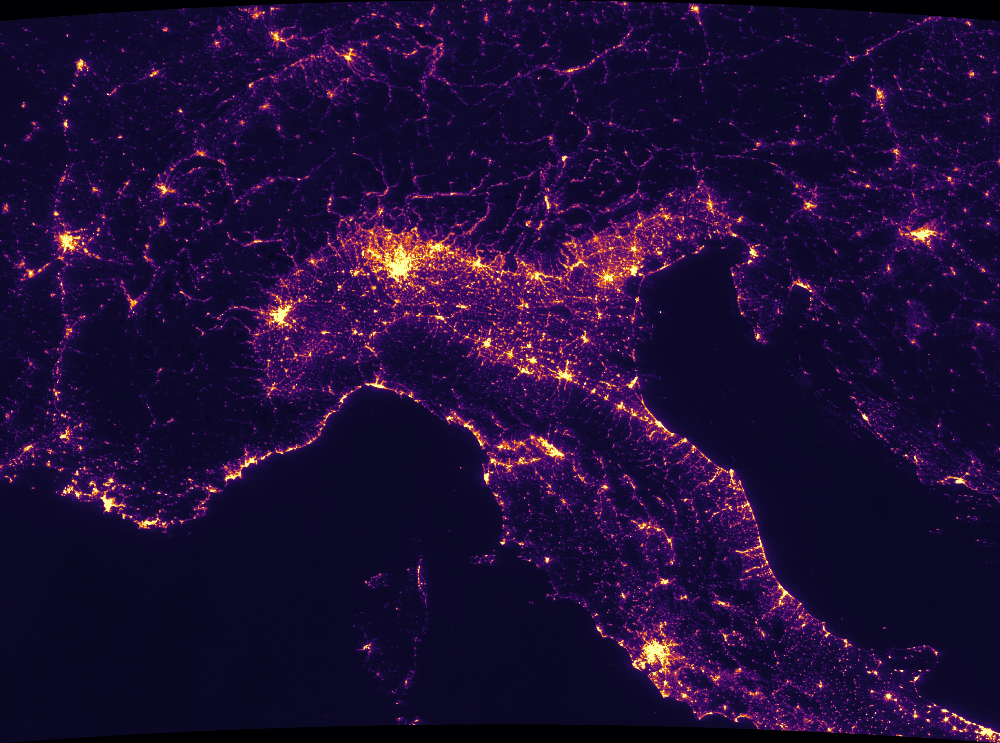

Air Quality vs. Urbanisation — NO₂ & Night-time Lights in the Po Valley
A satellite analysis of nitrogen-dioxide pollution and its link with urbanisation in the Po Valley — Sentinel-5P × VIIRS, 2025
1.Project Overview
Il progetto studia la relazione tra inquinamento da biossido di azoto (NO₂) e urbanizzazione nel Bacino Padano, una delle aree più inquinate d'Europa. Combinando dati satellitari di Sentinel-5P/TROPOMI (NO₂) e Suomi-NPP/VIIRS (luci notturne, usate come proxy della densità urbana), è stata costruita una pipeline riproducibile — dall'estrazione cloud su Google Earth Engine, all'analisi statistica in Python, fino alla cartografia in QGIS. Il risultato chiave: le luci notturne spiegano circa il 41% della variabilità spaziale dell'NO₂, ma il restante 59% è guidato dalla geografia — la conca padana intrappola l'aria anche lontano dalle città.
2.Strategic Value & Output
La qualità dell'aria nel Bacino Padano è un tema sanitario e normativo di primo piano: l'area supera con frequenza i limiti europei di NO₂ e particolato, e le centraline a terra (ARPA) coprono solo punti isolati. Un approccio satellitare offre una copertura continua e omogenea su tutta la pianura. Il progetto produce tre output operativi: mappe stagionali dell'inquinamento, un modello statistico che quantifica quanto l'urbanizzazione spieghi l'NO₂, e una mappa delle anomalie che individua le zone buie ma inquinate — utili per indirizzare monitoraggio e politiche là dove la rete di centraline, concentrata nei centri urbani, è più rada.
3.Study Area
L'area di studio è il Bacino Padano centro-occidentale (Piemonte, Lombardia, Veneto ed Emilia-Romagna), il grande catino chiuso tra l'arco alpino a nord-ovest e l'Appennino a sud. La conformazione a "conca", unita alle frequenti inversioni termiche invernali, limita il rimescolamento dell'aria e favorisce l'accumulo degli inquinanti al suolo: è una delle ragioni per cui la pianura è tra le aree più inquinate d'Europa. L'AOI è definita dai confini amministrativi ISTAT; il CRS di lavoro è EPSG:32632 (WGS 84 / UTM 32N) e il periodo analizzato è l'anno 2025, con composit stagionali per inverno (gen–feb) ed estate (giu–ago).

4.Data Source
| Dataset | Source | Type |
|---|---|---|
| Administrative boundaries | ISTAT | Vector (polygon) |
| Tropospheric NO₂ column | Sentinel-5P / TROPOMI — Copernicus (OFFL L3) | Raster ~1 km |
| Night-time lights | Suomi-NPP / VIIRS DNB (stray-light corrected) | Raster ~500 m |
| DTM | NASA SRTM 90 DEM (via GEE) | Raster ~90 m |
| Built-up areas | ESA WorldCover (via GEE) | Raster ~10 m |
| Road network | Geofabrik OSM | Vector (line) |
5.Methodology

#1 Cloud extraction (Google Earth Engine)
L'estrazione avviene sui server di Google, senza scaricare dati grezzi. Uno script calcola i composit medi di NO₂ — con filtro nuvole (cloud_fraction < 0.3) — per inverno, estate e media annua 2025, più la media annua delle luci VIIRS, ritagliati sull'AOI ed esportati come GeoTIFF.
#2 Spatial analysis (Python)
Le luci (~500 m) vengono allineate alla griglia dell'NO₂ (~1 km), gestendo esplicitamente il mismatch di risoluzione tra i due sensori. Sulle luci si applica una trasformazione logaritmica; si calcolano correlazione di Pearson e Spearman, regressione OLS e i residui (osservato − previsto). Una maschera dedicata isola i pixel nel terzo più buio e nel terzo più inquinato.
Perché queste scelte? — logaritmo, OLS, terzili
Trasformazione logaritmica sulle luci — la radianza notturna è molto sbilanciata: pochissimi pixel (i centri città) hanno valori altissimi, la gran parte è bassa. Il logaritmo comprime i valori estremi e distende quelli bassi, linearizzando la relazione con l'NO₂ (che cresce con rendimenti decrescenti rispetto all'urbanizzazione): così correlazione e regressione, che assumono una relazione lineare, restano valide.
Regressione OLS — è il modo più semplice e trasparente per quantificare la relazione. Fornisce l'R² (la quota di variabilità dell'NO₂ spiegata dalle luci, cioè il 41%), la pendenza e, soprattutto, i residui (osservato − previsto): sono questi a generare la mappa delle anomalie, cioè i punti in cui l'inquinamento reale devia da quello atteso dall'urbanizzazione.
Terzo più buio / terzo più inquinato — per isolare le zone buie ma inquinate servono due soglie. Usare i percentili (33° per il buio, 66° per l'NO₂) invece di valori assoluti è una scelta relativa e robusta: si auto-adatta alla distribuzione dei dati ed evita cutoff arbitrari (in quali unità?). L'intersezione dei due estremi opposti — terzo più scuro e terzo più sporco — restituisce l'anomalia più netta, circa l'1% dell'area.
#3 Cartography (QGIS)
Layout di stampa su fondo scuro: scala diverging per i residui, map themes per il confronto stagionale, poligonizzazione e smoothing per le zone buie.
Lo schema riproduce l'intera pipeline in stile pseudo-codice: le tre fasi #1–#3 descritte sopra, e i risultati chiave — luci 41% / geografia 59%, inverno ≈ 2,3× estate, ~900 km² buio-ma-inquinato.
6.Intermediate Maps

6.1 Seasonal NO₂ (winter vs. summer)
I composit stagionali mostrano il crollo estivo dell'NO₂ — dovuto al maggiore rimescolamento atmosferico e all'assenza di riscaldamento — e il nucleo intenso invernale sul centro pianura. In media l'NO₂ invernale è circa 2,3× quello estivo (77,6 vs 34,2 µmol/m² su 91.707 pixel; l'estate è il 56% più bassa).

Distribuzione stagionale dell'NO₂
Il grafico della distribuzione mostra non solo quanto ma come cambia la stagione: d'estate i valori sono compatti su livelli bassi e simili (atmosfera ben rimescolata), mentre d'inverno la distribuzione si allarga e scivola verso destra, con una lunga coda di concentrazioni elevate. Non è solo un aumento della media, ma una popolazione di valori più alta e più disuguale — la firma del ristagno atmosferico padano dovuto alle inversioni termiche invernali.

6.2 Night-time lights (VIIRS)
La radianza notturna media è il proxy quantitativo dell'urbanizzazione usato nel modello di correlazione: evidenzia l'asse Torino–Milano–Verona e la via Emilia. La mappa è mostrata a risoluzione nativa (~500 m); per l'analisi di correlazione il dato è stato poi ricampionato sulla griglia dell'NO₂ (~1 km) — vedi § 5.

6.3 Infrastructure footprint
L'edificato (ESA WorldCover 10 m) e la rete stradale (OpenStreetMap / Geofabrik) mostrano le sorgenti reali dell'NO₂: città e corridoi infrastrutturali. È il contesto fisico dietro al proxy luminoso, e introduce due chiavi di lettura usate più avanti — le autostrade come corridoi di inquinamento e le zone buie ma inquinate (campagne e poli industriali lontani dai centri urbani).
7.Correlation & Regression Model
La relazione tra urbanizzazione (log della radianza notturna) e NO₂ viene quantificata con correlazione di Pearson e Spearman e una regressione OLS. La trasformazione logaritmica linearizza la relazione; l'R² misura la quota di variabilità dell'NO₂ spiegata dalle luci. Lo scatter plot (densità dei pixel + retta di regressione) sintetizza il modello.

8.Anomaly Mapping
Il modello prevede, per ogni pixel, l'NO₂ atteso dalle luci; il residuo (osservato − previsto) misura lo scarto. La mappa dei residui rivela un nucleo rosso esteso sulla bassa pianura — più inquinato del previsto — firma del ristagno atmosferico padano, mentre i rilievi risultano più puliti del previsto. Una maschera dedicata isola poi le zone nel terzo più buio e nel terzo più inquinato: le aree buie ma inquinate.


9.Results & Comparison
L'analisi su 90.977 pixel mostra una correlazione positiva e robusta tra luci notturne e NO₂ — Pearson r = 0.64, Spearman ρ = 0.72 — con una regressione che spiega il 41% della varianza (R² = 0.41). Il restante 59% è guidato dalla geografia: la mappa dei residui mostra che la bassa pianura è inquinata oltre quanto la sua urbanizzazione prevederebbe. Circa l'1% dell'area (~900 km²) risulta buio ma inquinato — pianure agricole e corridoi infrastrutturali lontani dai centri urbani. Il confronto stagionale conferma la forte stagionalità: l'estate è nettamente più pulita dell'inverno.
In conclusione, l'NO₂ del Bacino Padano è prodotto dall'uomo ma governato dalla geografia: le luci notturne dicono dove viene generato, la conca padana dove si accumula. Ristagnando e diffondendosi, l'inquinamento diventa un fenomeno d'area che raggiunge anche le campagne lontane dai centri urbani — ed è proprio questa quota "geografica", fatta di trasporto atmosferico e di sorgenti (strade, industrie, agricoltura) invisibili alle luci, che l'urbanizzazione da sola non può spiegare.
10.Limitations & Future Development
- Risoluzione. Il footprint nativo di TROPOMI è grossolano (~5,5 km), molto più grande di VIIRS (~500 m): il confronto va letto a scala d'area, non di singolo pixel.
- MAUP. I risultati di correlazione dipendono dalla scala di aggregazione (Modifiable Areal Unit Problem).
- Autocorrelazione spaziale. I pixel vicini non sono indipendenti: la significatività "naive" è sovrastimata. Uno sviluppo previsto è il test di Moran's I.
- Correlazione ≠ causalità. Le luci sono un proxy dell'urbanizzazione, non la causa diretta dell'NO₂.
- Artefatto del modello. Sui pixel iper-luminosi il fit logaritmico sovrastima l'NO₂.
- Sviluppi futuri: analisi multi-anno dei trend, confronto pre/post blocchi del traffico, e validazione con le centraline ARPA a terra.
Tools & Skills
Google Earth Engine · Python (geopandas, rasterio, rioxarray, scipy, matplotlib) · QGIS · Git / GitHub · Remote sensing & atmospheric data · Raster map algebra · Spatial statistics (correlation, regression, residuals) · Cartographic design.
References
- Copernicus / ESA — Sentinel-5P TROPOMI NO₂ (via Google Earth Engine).
- Elvidge, C.D., Zhizhin, M., Ghosh, T., et al. (2021). Annual Time Series of Global VIIRS Nighttime Lights. Remote Sensing, 13(5), 922.
- ISTAT — Confini delle unità amministrative a fini statistici.
- QGIS Development Team — QGIS Geographic Information System (OSGeo); GDAL/OGR contributors.
- van Geffen, J., et al. — TROPOMI ATBD of the total and tropospheric NO₂ data products (KNMI).